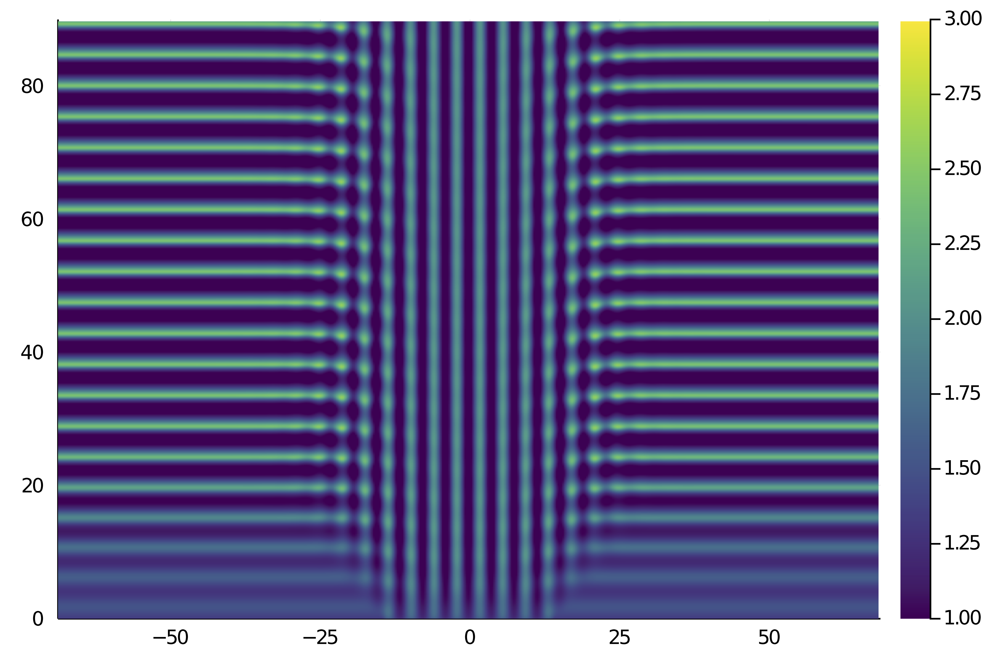
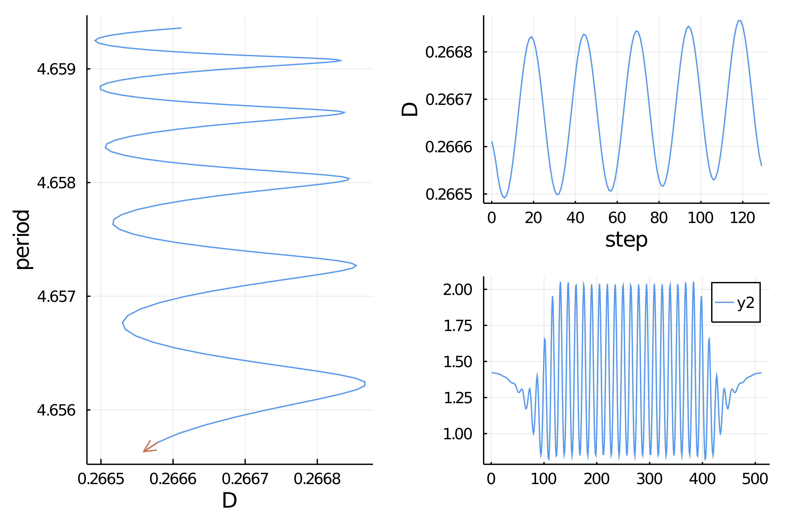

🟠 Brusselator 1d with periodic BC using FourierFlows.jl
This is a very old code that has not been updated. Very little is required to make it up to date.
We look at the Brusselator in 1d, see [Tzou]. The equations are
\[\begin{aligned} \frac { \partial u } { \partial t } & = D \frac { \partial ^ { 2 } u } { \partial z ^ { 2 } } + u ^ { 2 } v - ( B + 1 ) u + E \\ \frac { \partial v } { \partial t } & = \frac { \partial ^ { 2 } v} { \partial z ^ { 2 } } + B u - u ^ { 2 } v \end{aligned}\tag{E}\]
with periodic boundary conditions. These equations have been introduced to reproduce an oscillating chemical reaction.
We focus on computing a snaking branch of periodic orbits using spectral methods implemented in Brusselator.jl:
using Revise, BifurcationKitusing Brusselator, Plots, ForwardDiff, LinearAlgebra, Setfield, DiffEqBaseusing FFTW: irfftconst BK = BifurcationKitdev = CPU() # Device (CPU/GPU)nx = 512 # grid resolutionstepper = "FilteredRK4" # timestepperdt = 0.01 # timestepnsteps = 9000 # total number of time-stepsnsubs = 20 # number of time-steps for intermediate logging/plotting (nsteps must be multiple of nsubs)# parameters for the model used by Tzou et al. (2013)E = 1.4L = 137.37 # Domain lengthε = 0.1μ = 25ρ = 0.178D_c = ((sqrt(1 + E^2) - 1) / E)^2B_H = (1 + E * sqrt(D_c))^2B = B_H + ε^2 * μD = D_c + ε^2 * ρkc = sqrt(E / sqrt(D))# building the modelgrid = OneDGrid(dev, nx, L)params = Brusselator.Params(B, D, E)vars = Brusselator.Vars(dev, grid)equation = Brusselator.Equation(dev, params, grid)prob = FourierFlows.Problem(equation, stepper, dt, grid, vars, params, dev)get_u(prob) = irfft(prob.sol[:, 1], prob.grid.nx)get_v(prob) = irfft(prob.sol[:, 2], prob.grid.nx)u_solution = Diagnostic(get_u, prob; nsteps=nsteps+1)diags = [u_solution]We now integrate the model to find a periodic orbit:
l = 28θ = @. (grid.x > -l/2) & (grid.x < l/2)au, av = -(E^2 + kc^2) / B, -1cu, cv = -E * (E + im) / B, 1# initial conditionu0 = @. E + ε * real( au * exp(im * kc * grid.x) * θ + cu * (1 - θ) )v0 = @. B/E + ε * real( av * exp(im * kc * grid.x) * θ + cv * (1 - θ) )set_uv!(prob, u0, v0)plot_output(prob)# move forward in time to capture the periodic orbitfor j=0:Int(nsteps/nsubs) updatevars!(prob) stepforward!(prob, diags, nsubs)end# estimate of the periodic orbit, will be used as initial condition for a Krylov-Newtoninitpo = copy(vcat(vcat(prob.vars.u, prob.vars.v), 4.9))using RecursiveArrayToolst = u_solution.t[1:10:nsteps]U_xt = reduce(hcat, [ u_solution.data[j] for j=1:10:nsteps ])heatmap(grid.x, t, U_xt', c = :viridis, clims = (1, 3))which gives

Building the Shooting problem
We compute the periodic solution of (E) with a shooting algorithm. We thus define a function to compute the flow and its differential.
# update the statesfunction _update!(out, pb::FourierFlows.Problem, N) out[1:N] .= pb.vars.u out[N+1:end] .= pb.vars.v outend# update the parameters in pbfunction _setD!(D, pb::FourierFlows.Problem) pb.eqn.L[:, 1] .*= D / prob.params.D pb.params.D = Dend# compute the flow from x up to time tfunction ϕ(x, p, t) (;pb, D, N) = p _setD!(D, pb) # set initial condition @views set_uv!(pb, x[1:N], x[N+1:2N]) pb.clock.t=0.; pb.clock.step=0 # determine number of time steps dt = pb.clock.dt nsteps = div(t, dt) |> Int # compute flow stepforward!(pb, nsteps) rest = t - nsteps * dt dt = pb.clock.dt pb.clock.dt = rest stepforward!(pb, 1) pb.clock.dt = dt updatevars!(pb) out = similar(x) _update!(out, pb, N) return (t=t, u=out)end# differential of the flow by FDfunction dϕ(x, p, dx, t; δ = 1e-8) phi = ϕ(x, p, t).u dphi = (ϕ(x .+ δ .* dx, p, t).u .- phi) ./ δ return (t=t, u=phi, du=dphi)endWe also need the vector field
function vf(x, p) (;pb, D, N) = p # set parameter in prob pb.eqn.L[:, 1] .*= D / pb.params.D pb.params.D = D u = @view x[1:N] v = @view x[N+1:end] # set initial condition set_uv!(pb, u, v) rhs = Brusselator.get_righthandside(pb) # rhs is in Fourier space, put back to real space out = similar(x) ldiv!((@view out[1:N]), pb.grid.rfftplan, rhs[:, 1]) ldiv!((@view out[N+1:end]), pb.grid.rfftplan, rhs[:, 2]) return outendWe then specify the shooting problem
# parameters to be passed to ϕpar_bru = (pb = prob, N = nx, nsubs = nsubs, D = D)# example of vector passed to ϕx0 = vcat(u0,v0)# here we define the problem which encodes the standard shootingflow = Flow(vf, ϕ, dϕ)# the first section is centered around a stationary state_center = vcat(E*ones(nx), B/E*ones(nx))# section for the flowsectionBru = BK.SectionSS(vf(initpo[1:end-1], par_bru), _center)probSh = Shooting(M = 1, flow = flow, ds = diff(LinRange(0, 1, 1 + 1)), section = sectionBru, par = par_bru, lens = (@optic _.D), jacobian = :FiniteDifferences)Finding a periodic orbit
# linear solver for the Shooting problemls = GMRESIterativeSolvers(N = 2nx+1, reltol = 1e-4)# parameters for Krylov-Newtonoptn = NewtonPar(tol = 1e-9, verbose = true, # linear solver linsolver = ls, # eigen solver eigsolver = EigKrylovKit(dim = 30, x₀ = rand(2nx), verbose = 1 ) )# Newton-Krylov method to check convergence and tune parameterssolp = @time newton(probSh, initpo, optn, normN = x->norm(x,Inf))and you should see (the guess was not that good)
┌─────────────────────────────────────────────────────┐│ Newton step residual linear iterations │├─────────────┬──────────────────────┬────────────────┤│ 0 │ 1.6216e+03 │ 0 ││ 1 │ 4.4376e+01 │ 6 ││ 2 │ 9.0109e-01 │ 15 ││ 3 │ 4.9044e-02 │ 32 ││ 4 │ 4.1139e-03 │ 27 ││ 5 │ 6.0704e-03 │ 33 ││ 6 │ 2.4721e-04 │ 33 ││ 7 │ 3.7889e-05 │ 34 ││ 8 │ 6.6836e-07 │ 31 ││ 9 │ 2.0295e-09 │ 39 ││ 10 │ 2.1685e-12 │ 41 │└─────────────┴──────────────────────┴────────────────┘ 83.615047 seconds (284.31 M allocations: 24.250 GiB, 6.28% gc time)Computation of the snaking branch
# you can detect bifurcations with the option detect_bifurcation = 3optc = ContinuationPar(newton_options = optn, ds = -1e-3, dsmin = 1e-7, dsmax = 2e-3, p_max = 0.295, plot_every_step = 2, max_steps = 1000, detect_bifurcation = 0)bd = continuation(probSh, solp, PALC(bls = MatrixFreeBLS(@set ls.N = 2nx+2)), optc; plot = true, verbosity = 3, plot_solution = (x,p ; kw...) -> plot!(x[1:nx];kw...), normC = x->norm(x,Inf))which leads to

References
- Tzou
Tzou, J. C., Y.-P. Ma, A. Bayliss, B. J. Matkowsky, and V. A. Volpert. Homoclinic Snaking near a Codimension-Two Turing-Hopf Bifurcation Point in the Brusselator Model.” Physical Review E 87, no. 2 (February 14, 2013): 022908. https://doi.org/10.1103/PhysRevE.87.022908.